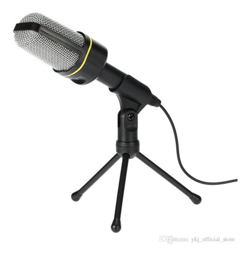
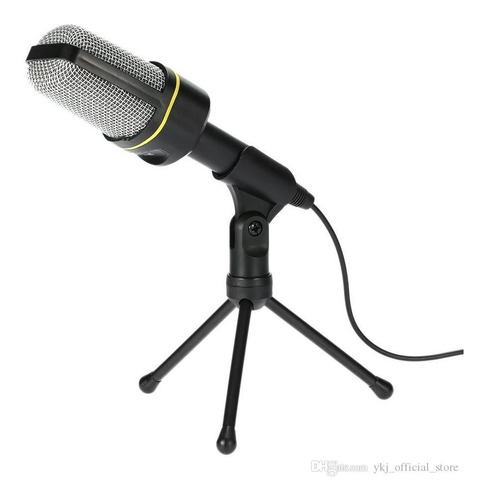

Tipos de micrófonos para pc:
Auriculares micrófono:
Micrófonos de auriculares se pueden utilizar para casi cualquiera de las necesidades que
se enumeran más arriba. Ya sea que usted está conversando, hablando con los contactos de negocios,
que dicta la voz de software de reconocimiento, la grabación de un clip de vídeo o audio, o
jugar juegos en línea no es un kit manos libres portátil para usted. La mayoría de los micrófonos
de auriculares también incluyen auriculares estéreo, que ayudan a evitar que otras personas escuchar
la conversación. A pesar de que hoy en día es casi estándar, asegúrese de comprobar de cancelación de ruido en el auricular.
Los jugadores ávidos por lo general se desea obtener un kit manos libres con auriculares que
encierran totalmente las orejas, para que puedan amortiguar los sonidos en la sala, sobre todo si
la televisión o música que puede estar pasando mientras están jugando. Hay mejores auriculares micrófono
de primera clase disponibles para los jugadores ávidos puede ser completamente sumergido en la experiencia
de sonido de alta calidad.
Micrófonos de escritorio:
Micrófonos de escritorio funcionan bien en situaciones en las que varias personas
en la sala se puede colaborar en el intercambio o la grabación. No hay auriculares
para el audio puede ser claramente escuchado por todos, y nadie puede hablar en el
micrófono para hacerse oír. Esto funciona bien para las reuniones o en el chat cuando toda la familia está presente.
Pasos detallados
Paso 1
Gira la computadora para que puedas ver la parte trasera.
Busca la ranura de entrada, que es rosa o roja. Ésta es la ranura del micrófono
de tu computadora. Conecta el micrófono en esta ranura y vuelve a girar tu torre.
Paso 2
Haz clic en el botón "Inicio", ve a "Panel de control" y después haz clic en "Sonido".
Pulsa en la pestaña "Grabación", resalta tu micrófono y haz clic en el botón "Configurar".
Aquí verás varias opciones para el micrófono y para probarlo.
Paso 3
Haz clic en "Inicio", después en "Todos los programas", "Accesorios" y "Grabadora de sonido".
Haz clic en "Empezar a grabar" y habla a través del micrófono.
Y listo!!!!
Información recolectada de techlandia.com y martingomez.weebly.com
 
